My time at Amazon Web Services
Disclaimer: Due to the private nature of my work, I have intentionally left out a few specific details and images.
Background
From developing customer experience journeys (mapping out cloud migration and modernisation pathways for Enterprise and Small-and-Medium Business clients across APJC), creating scalable IT tools and external programs all the way to undertaking competitor analysis on AWS’ global competitors in technology – I improved the processes of each of my respective teams and created guides and model template that are still used till this day.
Below I have outlined a few of the projects that I was most proud to be involved in.
Project 1
Role: Infrastructure Operations Pod Intern
Problem: Candidates and new hires were confused on the organisational structure and hiring processes of AWS.
My Solution: Invent and Simplify new preparation documents and team baseball cards to help the Talent Acquisition team recruit for our Infrastructure Operation teams – providing all the effective and necessary information for candidates to succeed in today’s job market.
Result:
- 18.8% increase in candidate-to-hire conversion rate in less than 3 months,
- 97.2% positive feedback rating on the items provided,
- Named ‘APJC Leadership Principles Champion 2021’.
Design Software used: Adobe PS, Adobe IL, Canva.
Measurement Metrics: LinkedIn Talent Solutions, Qualitrics, and other internal Amazon tools.
A glimpse at the project:
Exhibit 1: Network Development Engineer Landing Page
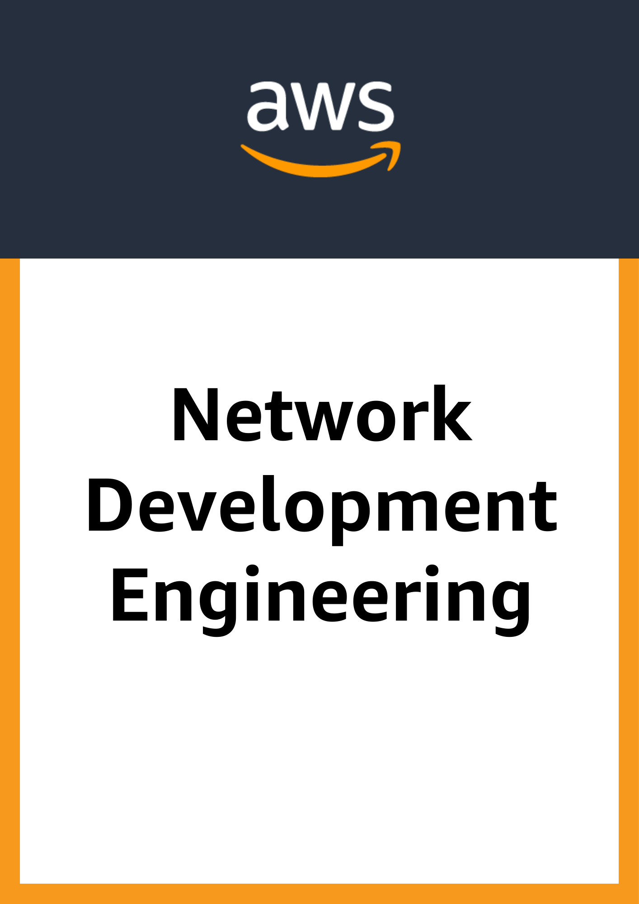
1: Home page
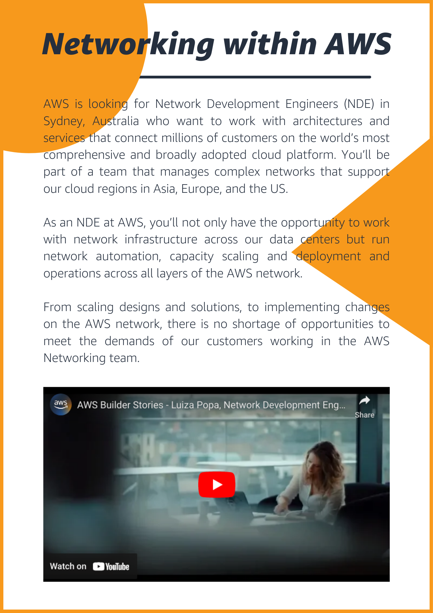
2: Introduction and brief background
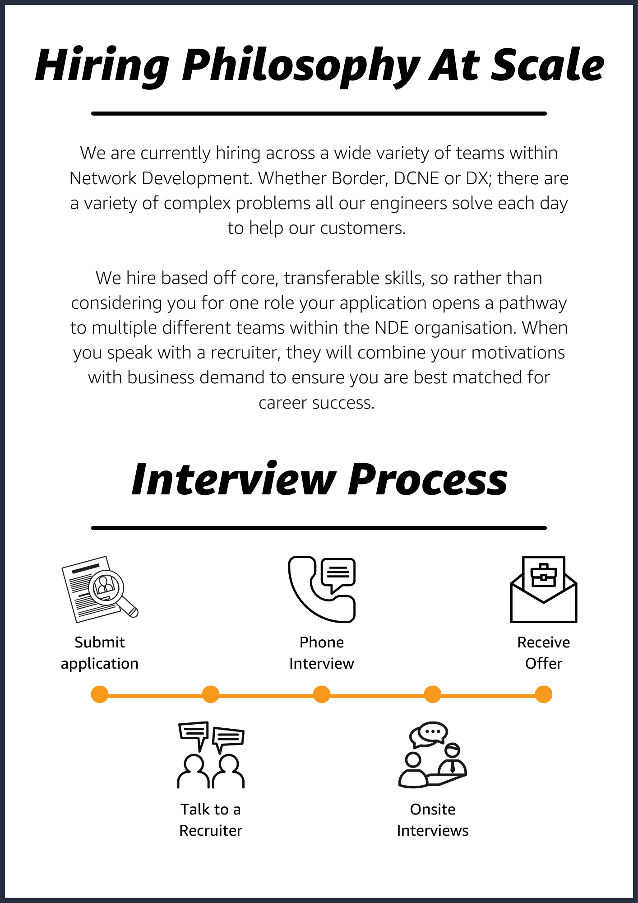
3: Hiring Processes
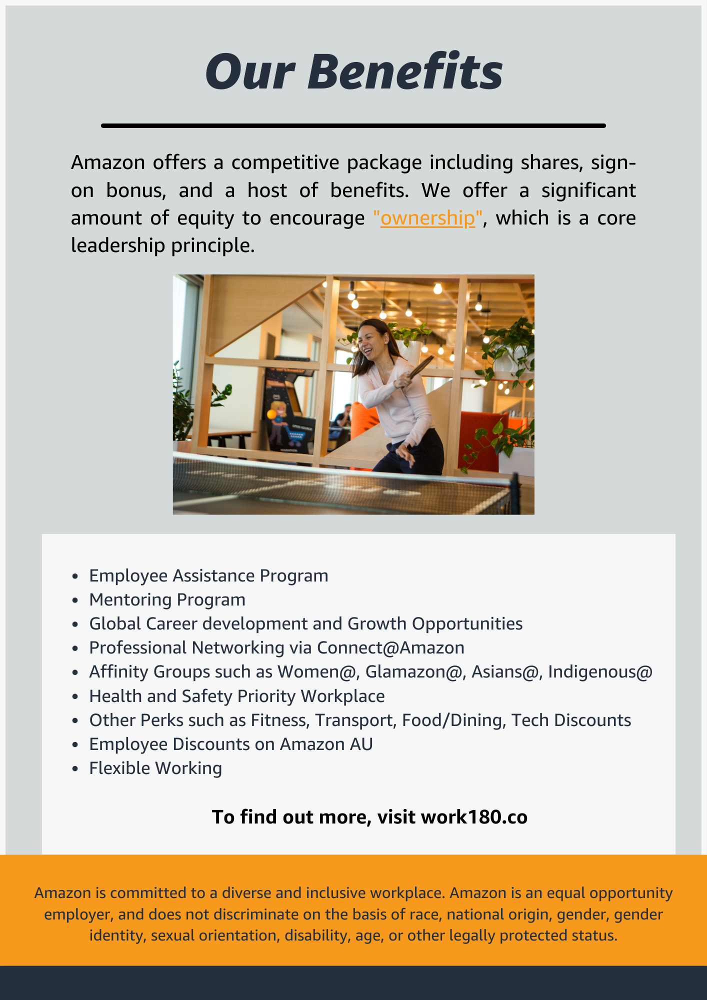
4: Benefits page
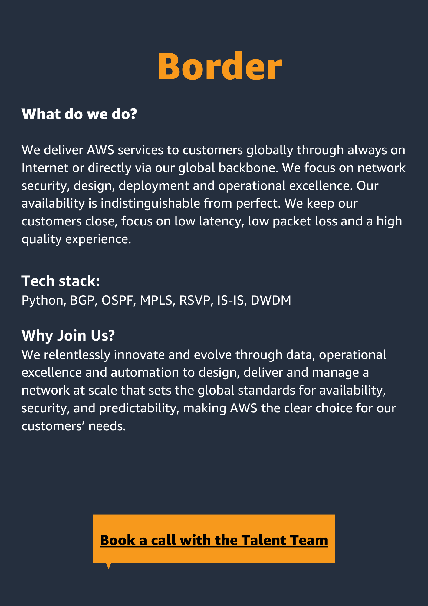
5: Team Description (Border)
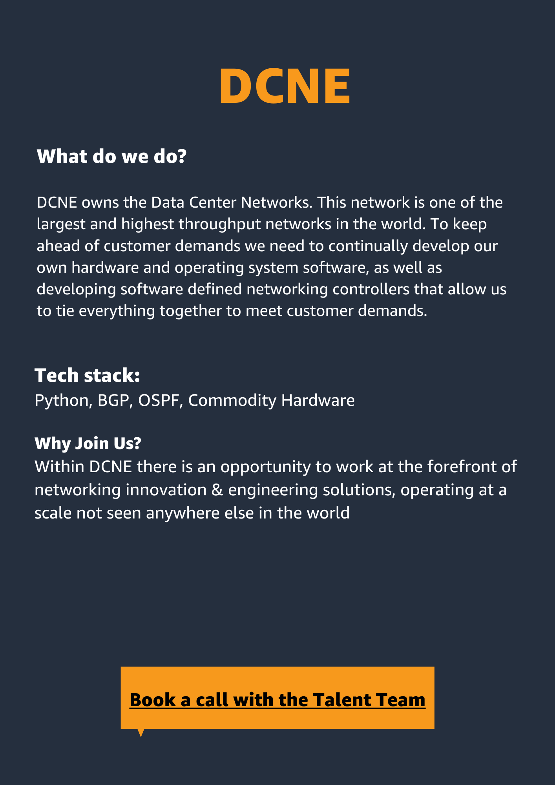
6: Team Description (DCNE)
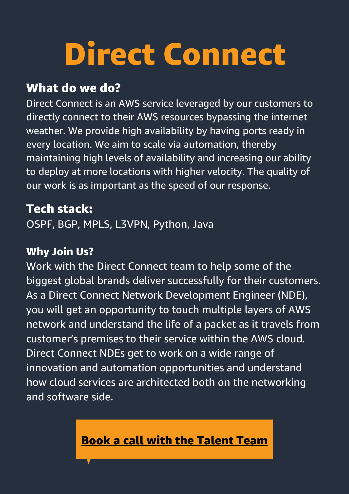
7: Team Description (DC)
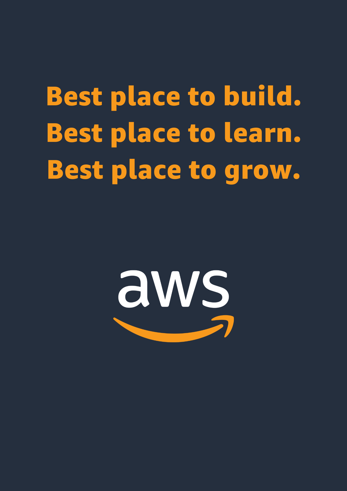
8: End page
Exhibit 2: Network & UC Team Baseball Cards
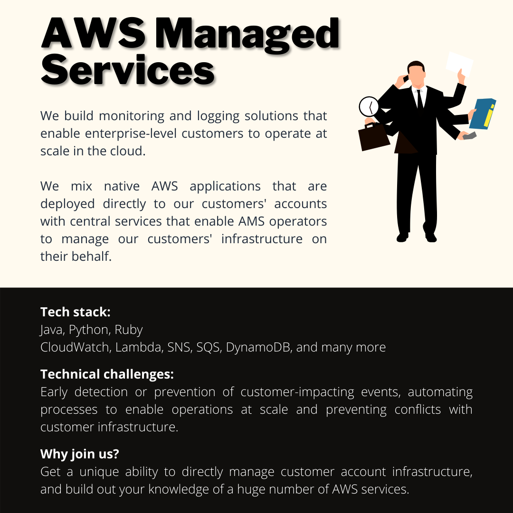
1: Team card (AWS Managed Services)
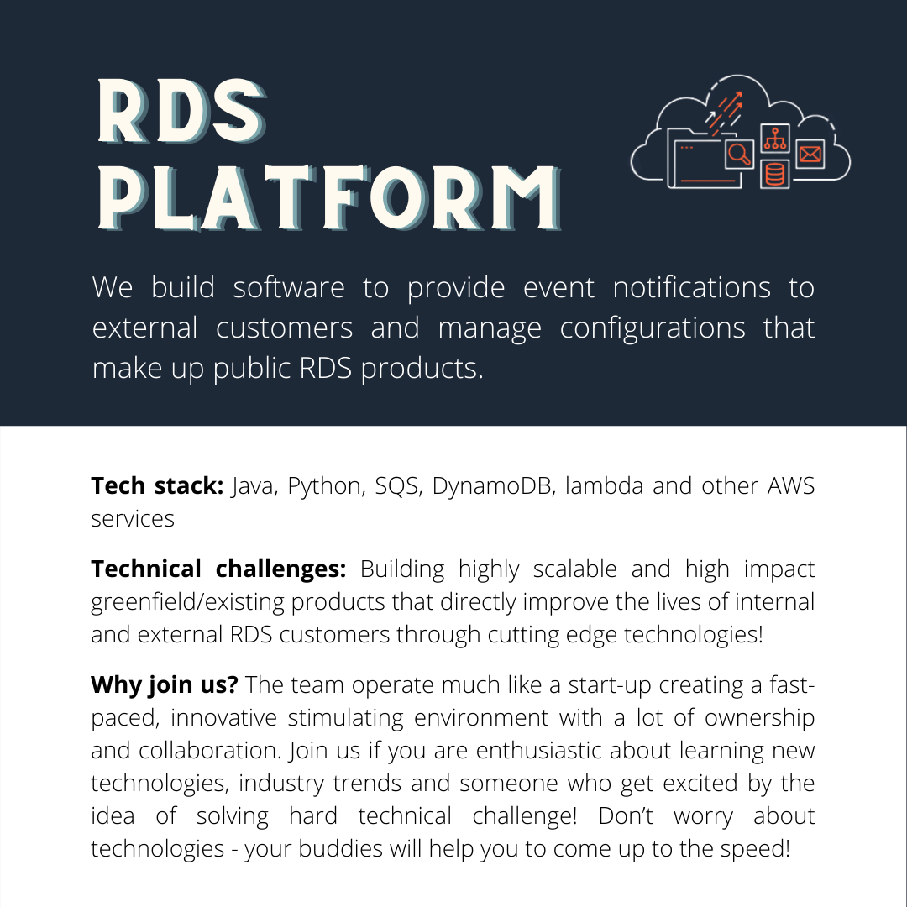
2: Team card (RDS Platform)
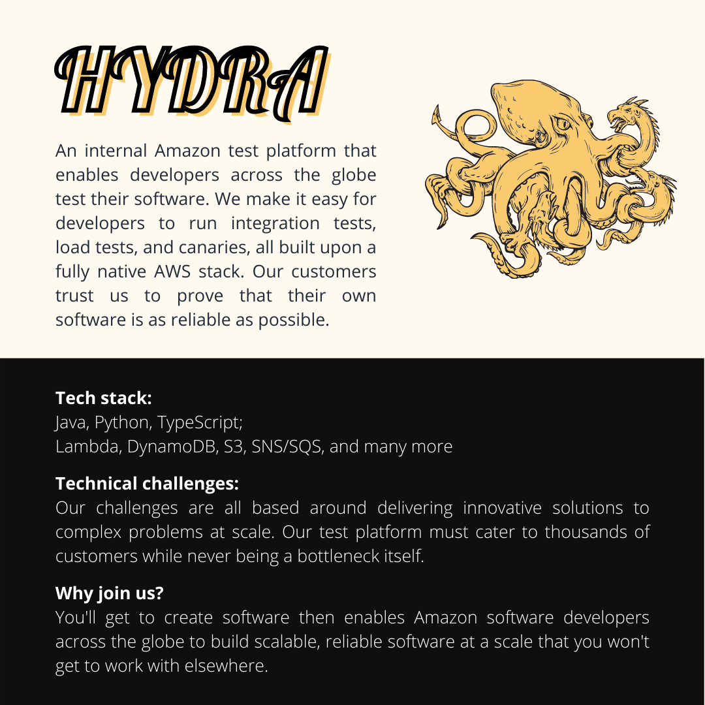
3: Team card (Hydra)
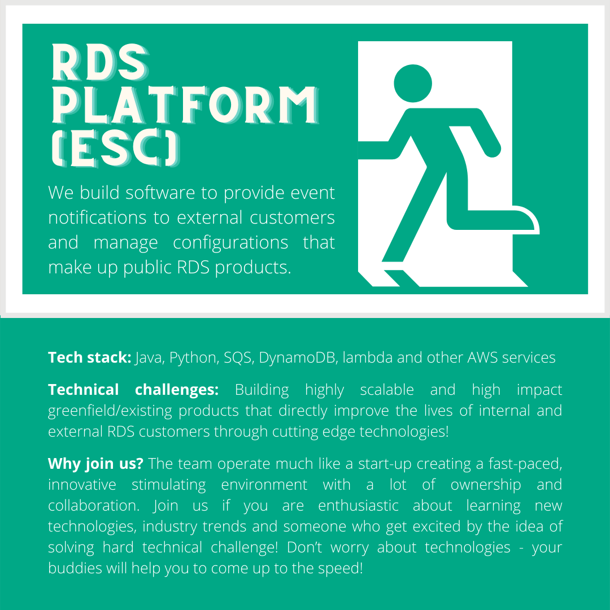
4: Team card (ESC)
Project 2
Role: Premium Support Pod Intern
Problem: Multiple manual processes delayed data analysis and information extrapolation.
My Solution: Deliver Results through new Python code that would automate and replace previously manual processes – ultimately delivering accurate and high-quality information in a timely fashion, whilst automatically generating written templates of business reports.
Result:
- 3.23 hours saved (on average) on each business report,
- 100% accurate data analysis and efficient information delivery to key stakeholders,
- Automatic exportation of information and generation of business reports.
Programming language used: Python.
Items interacted with: LinkedIn Sales Navigator, Fieldsense (survey tool), .csv files.
Measurement Metrics: Qualitrics, timers and other internal Amazon tools.
A glimpse at the project can be viewed at this github respository
Note: Due to the private nature of the project, many portions of the code have been ommitted and only one section of the information crunching has been shown.